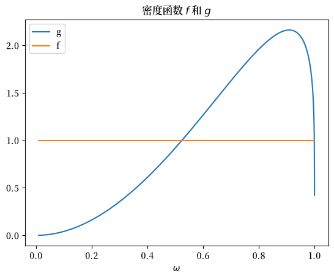
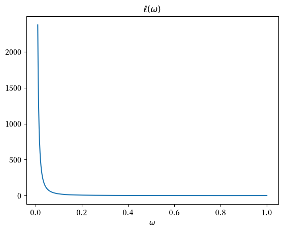
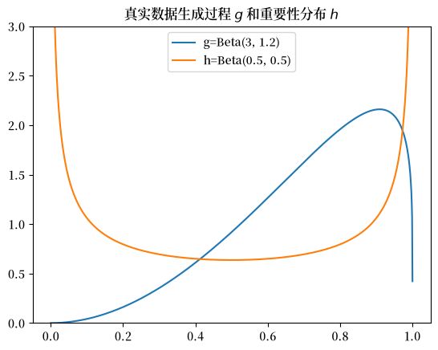
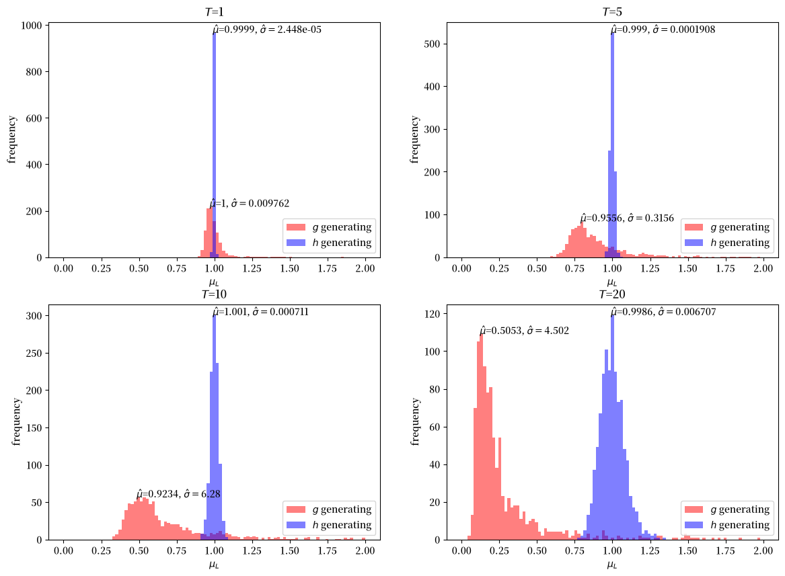
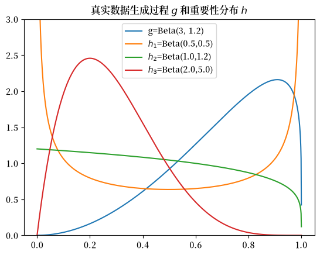
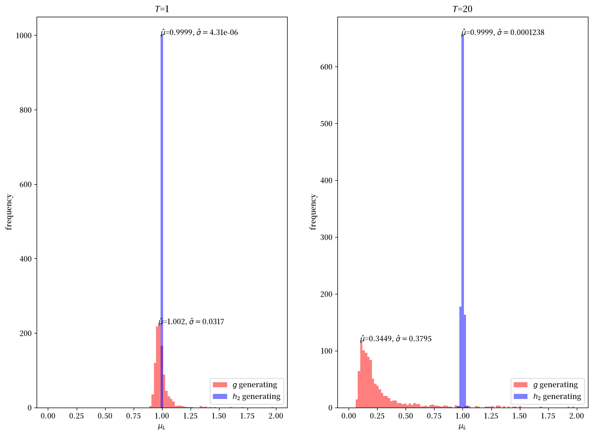
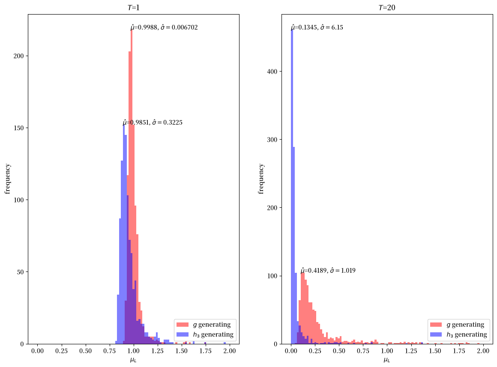

25. 似然比过程的均值#
25.1. 概述#
在这篇讲座中，我们描述了似然比过程的一个特殊性质，即尽管它几乎必然收敛于零，但对于所有 \(t \geq 0\)，其均值都等于1。
虽然在理论上（即在总体中）很容易验证这个特殊性质，但要通过计算机模拟来验证它却很具有挑战性，因为这需要应用大数定律来研究重复模拟的样本平均值。
为了应对这个挑战，本讲座使用__重要性抽样__来加速样本平均值向总体均值的收敛。
我们使用重要性抽样来估计累积似然比 \(L\left(\omega^t\right) = \prod_{i=1}^t \ell \left(\omega_i\right)\) 的均值。
首先导入一些Python包。
import numpy as np
from numba import jit, vectorize, prange
import matplotlib.pyplot as plt
FONTPATH = "fonts/SourceHanSerifSC-SemiBold.otf"
import matplotlib as mpl
mpl.font_manager.fontManager.addfont(FONTPATH)
plt.rcParams['font.family'] = ['Source Han Serif SC']
from math import gamma
25.2. 似然比的数学期望#
在这节课中，我们研究了似然比 \(\ell \left(\omega_t\right)\)
其中 \(f\) 和 \(g\) 是参数为 \(F_a\)、\(F_b\)、\(G_a\)、\(G_b\) 的Beta分布的密度函数。
假设独立同分布的随机变量 \(\omega_t \in \Omega\) 由 \(g\) 生成。
累积似然比 \(L \left(\omega^t\right)\) 为
我们的目标是很好地近似数学期望 \(E \left[ L\left(\omega^t\right) \right]\)。
在这节课中，我们证明了对所有 \(t\)，\(E \left[ L\left(\omega^t\right) \right]\) 等于1。
我们想要检验当用模拟的样本均值替代 \(E\) 时，这个结论的准确程度如何。
事实证明这比说起来要难，因为对于上述假设的Beta分布，当 \(t \rightarrow \infty\) 时，\(L\left(\omega^t\right)\) 具有非常偏斜的分布，且有很长的尾部。
这个特性使得用标准蒙特卡洛模拟方法来有效且准确地估计均值变得困难。
在本课中，我们将探讨标准蒙特卡洛方法为何会失效，以及重要性抽样如何提供一种计算上更有效的方法来近似累积似然比的均值。
我们首先来看一下密度函数f和g。
# 两个贝塔分布中的参数
F_a, F_b = 1, 1
G_a, G_b = 3, 1.2
@vectorize
def p(w, a, b):
r = gamma(a + b) / (gamma(a) * gamma(b))
return r * w ** (a-1) * (1 - w) ** (b-1)
# 两个密度函数
f = jit(lambda w: p(w, F_a, F_b))
g = jit(lambda w: p(w, G_a, G_b))
w_range = np.linspace(1e-2, 1-1e-5, 1000)
plt.plot(w_range, g(w_range), label='g')
plt.plot(w_range, f(w_range), label='f')
plt.xlabel(r'$\omega$')
plt.legend()
plt.title('密度函数 $f$ 和 $g$')
plt.show()
findfont: Failed to find font weight normal, now using 600.
findfont: Failed to find font weight normal, now using 600.
findfont: Failed to find font weight normal, now using 600.
findfont: Failed to find font weight normal, now using 600.

似然比是 l(w)=f(w)/g(w)。
l = jit(lambda w: f(w) / g(w))
plt.plot(w_range, l(w_range))
plt.title(r'$\ell(\omega)$')
plt.xlabel(r'$\omega$')
plt.show()

上图显示当 \(\omega \rightarrow 0\) 时，\(f \left(\omega\right)\) 保持不变而 \(g \left(\omega\right) \rightarrow 0\)，因此似然比趋向无穷大。
对 \(\hat{E} \left[L\left(\omega^t\right)\right] = \hat{E} \left[\prod_{i=1}^t \ell \left(\omega_i\right)\right]\) 的蒙特卡洛近似会重复从 \(g\) 中抽取 \(\omega\)，对每次抽取计算似然比 \( \ell(\omega) = \frac{f(\omega)}{g(\omega)}\)，然后对所有抽取结果取平均值。
由于当 \(\omega \rightarrow 0\) 时 \(g(\omega) \rightarrow 0\)，这种模拟程序对样本空间 [0,1] 中的某些部分采样不足，而这些部分对于很好地近似似然比 \(\ell(\omega)\) 的数学期望来说是需要经常访问的重要区域。
我们在下面通过数值方法说明这一点。
25.3. 重要性采样#
我们通过使用一种称为重要性采样的_分布变换_来解决这个问题。
在模拟过程中，我们不从 \(g\) 中抽取数据，而是使用另一个分布 \(h\) 来生成 \(\omega\) 的抽样。
这个想法是设计 \(h\) 使其对 \(\Omega\) 中那些 \(\ell \left(\omega_t\right)\) 取值较大但在 \(g\) 下密度较低的区域进行过采样。
用这种方式构造样本后，当我们计算似然比的经验均值时，必须用 \(g\) 和 \(h\) 的似然比对每个实现值进行加权。
通过这样做，我们恰当地考虑到了我们使用\(h\)而不是\(g\)来模拟数据的事实。
为了说明，假设我们对\({E}\left[\ell\left(\omega\right)\right]\)感兴趣。
我们可以简单地计算：
其中\(\omega_i^g\)表示\(\omega_i\)是从\(g\)中抽取的。
但是利用重要性抽样的见解，我们可以改为计算这个对象：
其中\(w_i\)现在是从重要性分布\(h\)中抽取的。
注意上述两个在总体上是完全相同的对象：
25.4. 选择抽样分布#
由于我们必须使用一个\(h\)，它在\(g\)赋予低概率的分布部分具有更大的质量，我们使用\(h=Beta(0.5, 0.5)\)作为我们的重要性分布。
这些图比较了\(g\)和\(h\)。
g_a, g_b = G_a, G_b
h_a, h_b = 0.5, 0.5
w_range = np.linspace(1e-5, 1-1e-5, 1000)
plt.plot(w_range, g(w_range), label=f'g=Beta({g_a}, {g_b})')
plt.plot(w_range, p(w_range, 0.5, 0.5), label=f'h=Beta({h_a}, {h_b})')
plt.title('真实数据生成过程 $g$ 和重要性分布 $h$')
plt.legend()
plt.ylim([0., 3.])
plt.show()

25.5. 近似累积似然比#
我们现在研究如何使用重要性抽样来近似 \({E} \left[L(\omega^t)\right] = \left[\prod_{i=1}^T \ell \left(\omega_i\right)\right]\)。
如上所述，我们的计划是从 \(q\) 中抽取序列 \(\omega^t\)，然后对似然比进行适当的重新加权：
其中最后一个等式使用从重要性分布 \(q\) 中抽取的 \(\omega_{i,t}^h\)。
这里 \(\frac{p\left(\omega_{i,t}^q\right)}{q\left(\omega_{i,t}^q\right)}\) 是我们分配给每个数据点 \(\omega_{i,t}^q\) 的权重。
下面我们准备一个Python函数，用于计算给定任何beta分布 \(p\)、\(q\) 的重要性抽样估计。
@jit(parallel=True)
def estimate(p_a, p_b, q_a, q_b, T=1, N=10000):
μ_L = 0
for i in prange(N):
L = 1
weight = 1
for t in range(T):
w = np.random.beta(q_a, q_b)
l = f(w) / g(w)
L *= l
weight *= p(w, p_a, p_b) / p(w, q_a, q_b)
μ_L += L * weight
μ_L /= N
return μ_L
考虑\(T=1\)的情况，这相当于近似\(E_0\left[\ell\left(\omega\right)\right]\)
对于标准蒙特卡洛估计，我们可以设置\(p=g\)和\(q=g\)。
estimate(g_a, g_b, g_a, g_b, T=1, N=10000)
0.9692313608128176
对于我们的重要性抽样估计，我们设定 \(q = h\)。
estimate(g_a, g_b, h_a, h_b, T=1, N=10000)
0.9973827223960646
显然，即使在 \(T=1\) 时，我们的重要性采样估计比蒙特卡洛估计更接近 \(1\)。
在计算更长序列的期望值 \(E_0\left[L\left(\omega^t\right)\right]\) 时，差异会更大。
当设置 \(T=10\) 时，我们发现蒙特卡洛方法严重低估了均值，而重要性采样仍然产生接近其理论值1的估计。
estimate(g_a, g_b, g_a, g_b, T=10, N=10000)
0.5373501425607728
estimate(g_a, g_b, h_a, h_b, T=10, N=10000)
1.0102117868379668
蒙特卡洛方法会低估是因为在分布\(g\)下，似然比\(L(\omega^T) = \prod_{t=1}^T \frac{f(\omega_t)}{g(\omega_t)}\)具有高度偏斜的分布。
从\(g\)中抽取的大多数样本产生较小的似然比，而真实均值需要偶尔出现的非常大的值，这些值很少被采样到。
在我们的情况下，由于当\(\omega \to 0\)时\(g(\omega) \to 0\)而\(f(\omega)\)保持不变，蒙特卡洛过程恰恰在似然比\(\frac{f(\omega)}{g(\omega)}\)最大的地方采样不足。
随着\(T\)的增加，这个问题呈指数级恶化，使标准蒙特卡洛方法变得越来越不可靠。
使用\(q = h\)的重要性采样通过更均匀地从对\(f\)和\(g\)都重要的区域采样来解决这个问题。
25.6. 样本均值的分布#
接下来我们研究蒙特卡洛和重要性采样方法的偏差和效率。
下面的代码使用蒙特卡洛和重要性采样方法生成估计值的分布。
def simulate(p_a, p_b, q_a, q_b, N_simu, T=1):
μ_L_p = np.empty(N_simu)
μ_L_q = np.empty(N_simu)
for i in range(N_simu):
μ_L_p[i] = estimate(p_a, p_b, p_a, p_b, T=T)
μ_L_q[i] = estimate(p_a, p_b, q_a, q_b, T=T)
return μ_L_p, μ_L_q
再次，我们首先通过设置T=1来估计\({E} \left[\ell\left(\omega\right)\right]\)。
我们对每种方法进行1000次模拟。
N_simu = 1000
μ_L_p, μ_L_q = simulate(g_a, g_b, h_a, h_b, N_simu)
# 标准蒙特卡洛（均值和标准差）
np.nanmean(μ_L_p), np.nanvar(μ_L_p)
(np.float64(0.9967013435743708), np.float64(0.006661397319335277))
# 重要性采样（均值和标准差）
np.nanmean(μ_L_q), np.nanvar(μ_L_q)
(np.float64(1.0000567704172532), np.float64(2.1106200597771176e-05))
虽然两种方法都倾向于给出接近1的\({E} \left[\ell\left(\omega\right)\right]\)均值估计，但重要性抽样估计的方差更小。
接下来，我们展示\(\hat{E} \left[L\left(\omega^t\right)\right]\)在\(T=1, 5, 10, 20\)这些情况下的估计值分布。
fig, axs = plt.subplots(2, 2, figsize=(14, 10))
μ_range = np.linspace(0, 2, 100)
for i, t in enumerate([1, 5, 10, 20]):
row = i // 2
col = i % 2
μ_L_p, μ_L_q = simulate(g_a, g_b, h_a, h_b, N_simu, T=t)
μ_hat_p, μ_hat_q = np.nanmean(μ_L_p), np.nanmean(μ_L_q)
σ_hat_p, σ_hat_q = np.nanvar(μ_L_p), np.nanvar(μ_L_q)
axs[row, col].set_xlabel('$μ_L$')
axs[row, col].set_ylabel('frequency')
axs[row, col].set_title(f'$T$={t}')
n_p, bins_p, _ = axs[row, col].hist(μ_L_p, bins=μ_range, color='r', alpha=0.5, label='$g$ generating')
n_q, bins_q, _ = axs[row, col].hist(μ_L_q, bins=μ_range, color='b', alpha=0.5, label='$h$ generating')
axs[row, col].legend(loc=4)
for n, bins, μ_hat, σ_hat in [[n_p, bins_p, μ_hat_p, σ_hat_p],
[n_q, bins_q, μ_hat_q, σ_hat_q]]:
idx = np.argmax(n)
axs[row, col].text(bins[idx], n[idx], r'$\hat{μ}$='+f'{μ_hat:.4g}'+r', $\hat{σ}=$'+f'{σ_hat:.4g}')
plt.show()

上述模拟练习表明,在所有\(T\)值下,重要性抽样估计都是无偏的,而标准蒙特卡洛估计则存在向下偏差。
显然,随着\(T\)的增加,偏差也在增加。
25.7. 选择抽样分布#
在上面,我们任意选择了\(h = Beta(0.5,0.5)\)作为重要性分布。
是否存在最优的重要性分布?
在我们这个特定情况下,由于我们事先知道\(E_0 \left[ L\left(\omega^t\right) \right] = 1\),我们可以利用这个知识。
因此,假设我们直接使用\(h = f\)。
当估计似然比的均值(T=1)时,我们得到:
μ_L_p, μ_L_q = simulate(g_a, g_b, F_a, F_b, N_simu)
# 重要性采样（均值和标准差）
np.nanmean(μ_L_q), np.nanvar(μ_L_q)
(np.float64(1.0), np.float64(0.0))
我们也可以使用其他分布作为我们的重要性分布。
下面我们选择几个分布并比较它们的采样特性。
a_list = [0.5, 1., 2.]
b_list = [0.5, 1.2, 5.]
w_range = np.linspace(1e-5, 1-1e-5, 1000)
plt.plot(w_range, g(w_range), label=f'g=Beta({g_a}, {g_b})')
plt.plot(w_range, p(w_range, a_list[0], b_list[0]), label=f'$h_1$=Beta({a_list[0]},{b_list[0]})')
plt.plot(w_range, p(w_range, a_list[1], b_list[1]), label=f'$h_2$=Beta({a_list[1]},{b_list[1]})')
plt.plot(w_range, p(w_range, a_list[2], b_list[2]), label=f'$h_3$=Beta({a_list[2]},{b_list[2]})')
plt.title('真实数据生成过程 $g$ 和重要性分布 $h$')
plt.legend()
plt.ylim([0., 3.])
plt.show()

我们考虑两个额外的分布。
提醒一下，\(h_1\)是我们上面使用的原始\(Beta(0.5,0.5)\)分布。
\(h_2\)是\(Beta(1,1.2)\)分布。
注意\(h_2\)在分布的较高值处与\(g\)有相似的形状，但在较低值处有更多的质量。
我们的直觉是\(h_2\)应该是一个不错的重要性抽样分布。
\(h_3\)是\(Beta(2,5)\)分布。
注意\(h_3\)在非常接近0的值和接近1的值处的质量为零。
我们的直觉是\(h_3\)将是一个较差的重要性抽样分布。
我们首先模拟并绘制使用\(h_2\)作为重要性抽样分布时\(\hat{E} \left[L\left(\omega^t\right)\right]\)估计值的分布。
h_a = a_list[1]
h_b = b_list[1]
fig, axs = plt.subplots(1,2, figsize=(14, 10))
μ_range = np.linspace(0, 2, 100)
for i, t in enumerate([1, 20]):
μ_L_p, μ_L_q = simulate(g_a, g_b, h_a, h_b, N_simu, T=t)
μ_hat_p, μ_hat_q = np.nanmean(μ_L_p), np.nanmean(μ_L_q)
σ_hat_p, σ_hat_q = np.nanvar(μ_L_p), np.nanvar(μ_L_q)
axs[i].set_xlabel('$μ_L$')
axs[i].set_ylabel('frequency')
axs[i].set_title(f'$T$={t}')
n_p, bins_p, _ = axs[i].hist(μ_L_p, bins=μ_range, color='r', alpha=0.5, label='$g$ generating')
n_q, bins_q, _ = axs[i].hist(μ_L_q, bins=μ_range, color='b', alpha=0.5, label='$h_2$ generating')
axs[i].legend(loc=4)
for n, bins, μ_hat, σ_hat in [[n_p, bins_p, μ_hat_p, σ_hat_p],
[n_q, bins_q, μ_hat_q, σ_hat_q]]:
idx = np.argmax(n)
axs[i].text(bins[idx], n[idx], r'$\hat{μ}$='+f'{μ_hat:.4g}'+r', $\hat{σ}=$'+f'{σ_hat:.4g}')
plt.show()

我们的模拟结果表明，\(h_2\) 确实是我们这个问题的一个很好的重要性抽样分布。
即使在 \(T=20\) 时，均值也非常接近 \(1\)，且方差很小。
h_a = a_list[2]
h_b = b_list[2]
fig, axs = plt.subplots(1,2, figsize=(14, 10))
μ_range = np.linspace(0, 2, 100)
for i, t in enumerate([1, 20]):
μ_L_p, μ_L_q = simulate(g_a, g_b, h_a, h_b, N_simu, T=t)
μ_hat_p, μ_hat_q = np.nanmean(μ_L_p), np.nanmean(μ_L_q)
σ_hat_p, σ_hat_q = np.nanvar(μ_L_p), np.nanvar(μ_L_q)
axs[i].set_xlabel('$μ_L$')
axs[i].set_ylabel('frequency')
axs[i].set_title(f'$T$={t}')
n_p, bins_p, _ = axs[i].hist(μ_L_p, bins=μ_range, color='r', alpha=0.5, label='$g$ generating')
n_q, bins_q, _ = axs[i].hist(μ_L_q, bins=μ_range, color='b', alpha=0.5, label='$h_3$ generating')
axs[i].legend(loc=4)
for n, bins, μ_hat, σ_hat in [[n_p, bins_p, μ_hat_p, σ_hat_p],
[n_q, bins_q, μ_hat_q, σ_hat_q]]:
idx = np.argmax(n)
axs[i].text(bins[idx], n[idx], r'$\hat{μ}$='+f'{μ_hat:.4g}'+r', $\hat{σ}=$'+f'{σ_hat:.4g}')
plt.show()

然而，\(h_3\)显然是我们这个问题的一个不理想的重要性抽样分布，在\(T = 20\)时，其均值估计与1相差甚远。
注意，即使在\(T = 1\)时，使用重要性抽样的均值估计比直接用\(g\)进行抽样的偏差更大。
因此，我们的模拟表明，对于我们的问题，直接使用\(g\)进行蒙特卡洛近似会比使用\(h_3\)作为重要性抽样分布更好。